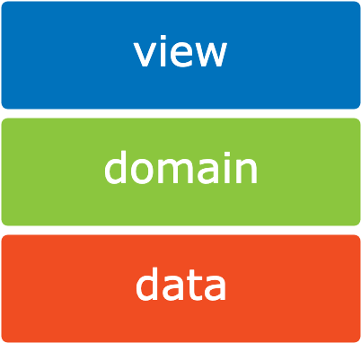
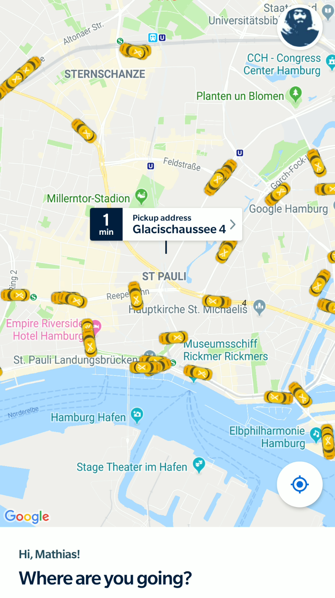
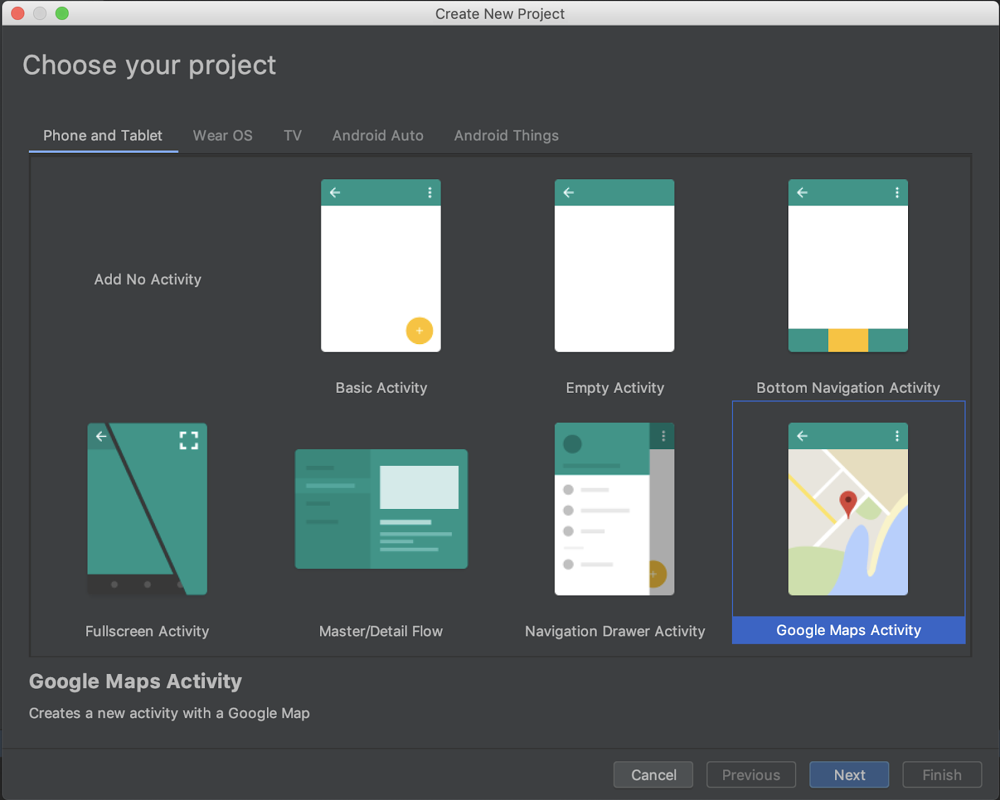
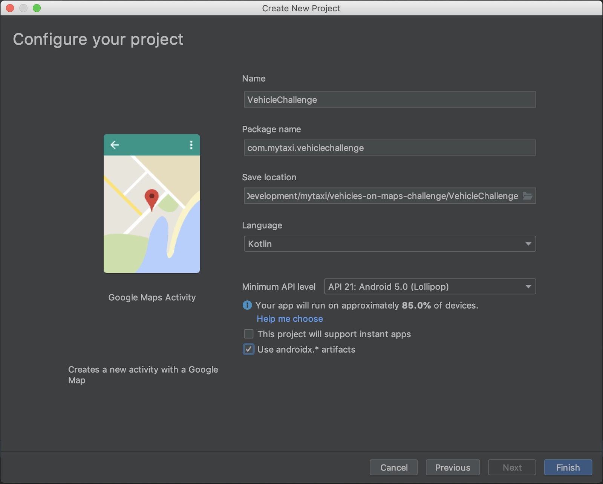
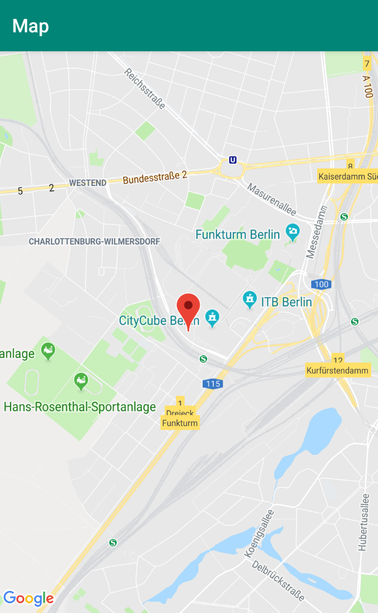
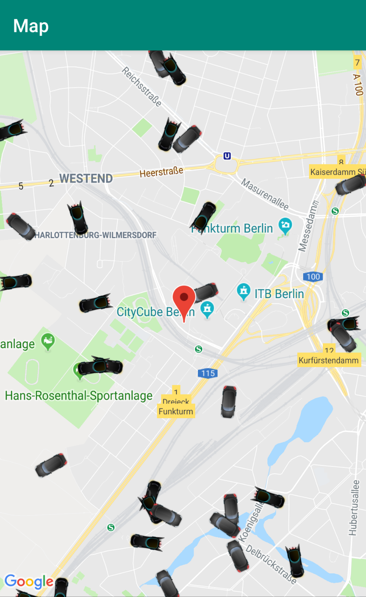

Last Updated: 2019-06-30
https://echorebel.github.io/vehicles-maps-challenge/
How quickly can we build an app that shows Vehicles on the Map?
For mytaxi it's a basic feature to show taxis on the map so the user is assured there are some available taxis around at his service. If one applies one will face a challenge to quickly implement a map and fetch vehicle data to show them on the map.
Easy to use - easy to maintain
Two special challenges exist in most apps.It should be easy to use for the User as it should be easy to maintain and modify by other developers.
Often developers have to deal with code that they didn't wrote - or don't remember after years that they wrote this particular code. The simpler it's written the easier it is for anyone to pick up.
Choose the right tools
To build any app you can use a lot of different existing building blocks. Have a reason to choose the right tool for the job instead of just following blindly what everyone else is doing. It doesn't matter in the end if you use Dagger or Koin, RxJava, Coroutines or LiveData. Choose them wisely and try to follow the YAGNI (You ain't gonna need it) principle. There is an awesome talk from Rich Hickey "Simple Made Easy" - simple is reliable but it's not easy.
Have a basic architecture in mind
Try to separate parts of you app so you can change and improve parts later. There are many ways to do it. One simple approach is to separate your apps into layers:
- Data (with IO and Network)
- Domain (Models and Business Logic)
- View (User facing representation)

What you'll build
In this codelab, you're going to build a google maps app as a challenge. Your app will:
- Grab vehicle data from an API.
- Show them on maps

What you'll learn
- How to embed google maps into your app
- How to read data from a remote API
- How to show the queried vehicle data on maps
This codelab is a challenge and you should focus on getting things done so. We will provide some snippets to get you rolling. You are still required to build all the glue code and wiring yourself. Non-relevant concepts and left out and you are free to apply patterns or libs to make you go fast.
What you'll need
- Android Studio and empty project
- Kotlin Plugin is recommended
- Google Developer Account to create a Google Maps API key
- Emulator or Device
Create new Android Studio project
Create a new project with the project wizard and select Google Maps Activity.

Enter Name and define a package name.

Get a key for the Google Maps API
To show maps we use the Google Maps SDK. You need to create a key in the developer console.
Easiest way is to just click the link provided in res/values/google_maps_api.xml as it will provide already SHA-1 certificate for the Api Key.
Verify your API key is working properly
Instead of showing Sydney on the map, set the Marker to the CityCube where Droidcon Berlin takes place with nicer zoom level!
val cityCube = LatLng(52.5002212, 13.2685643)
...
map.moveCamera(CameraUpdateFactory.newLatLngZoom(cityCube, 14f))Now just try to run the debug app and you should see a map like this:

In this section we will discuss how to grab the data we need to display the vehicles on the map from a demo API. The demo will just return random location within a window you specify in the request.
What kind of data do we expect?
Our simplified Demo API will return a list of vehicles (named Points of Interest here).
Every item contains an id, a coordinate, which type of fleet it belongs to - either TAXI or POOLING - and a heading: the direction facing relative to North in degrees in a cartesian plane.
Example Response
{
"poiList": [{
"id": 439670,
"coordinate": {
"latitude": 53.46036882190762,
"longitude": 9.909716434648558
},
"fleetType": "POOLING",
"heading": 344.19529122029735
},
{
"id": 739330,
"coordinate": {
"latitude": 53.668806556867445,
"longitude": 10.019908942943804
},
"fleetType": "TAXI",
"heading": 245.2005654202569
},
{
"id": 145228,
"coordinate": {
"latitude": 53.58500747958201,
"longitude": 9.807045083858156
},
"fleetType": "POOLING",
"heading": 71.63840043828377
}
]
}Now you need to generate data class from the json example, either by
- JsonToKotlinClass IntelliJ plugin or a similar one
- A online tool like json2kotlin.com
- Write from scratch manually - but why not be lazy?
Depending on the generated classes do the tweaks like you would like to do, e.g. change class namings and/or create enum for fleet types.
Eventually you will end up with something similar to this:
data class Response(
@SerializedName("poiList") val vehicles: List<Vehicle>
)
data class Vehicle(
@SerializedName("coordinate") val coordinate: Coordinate,
@SerializedName("fleetType") val fleetType: FleetType,
@SerializedName("heading") val heading: Double,
@SerializedName("id") val id: Int
)
data class Coordinate(
@SerializedName("latitude") val latitude: Double,
@SerializedName("longitude") val longitude: Double
)
enum class FleetType {
TAXI,
POOLING
}How to retrieve data from the API?
Now you need to implement a call to the API endpoint to retrieve the vehicle data from the network via HTTPS. Don't hurt yourself with AsyncTask - there are well tried & tested http clients available that do the major lifting for you, choose one:
Now implement a http call to this endpoint to get the vehicles:
https://fake-poi-api.mytaxi.com/?p1Lat={Latitude1}&p1Lon={Longitude1}&p2Lat={Latitude2}&p2Lon={Longitude2}
The parameters in { } are the geographic bounds (northeast and southwest) for the request. For testing purposes you can use the area around droidcon::
Northeast: 52.51570426234859, 13.287037834525108
Southwest: 52.48417497476959, 13.251724876463415
Example: How to accomplish it with Retrofit
Retrofit is used by many Android devs and it's pretty neat to just write a interface definition of the endpoint.
Add dependencies to
implementation 'com.squareup.retrofit2:retrofit:2.6.0'
implementation 'com.squareup.retrofit2:converter-gson:2.5.0'
implementation 'org.jetbrains.kotlinx:kotlinx-coroutines-android:1.3.0-M2'Let's have a look:
interface VehicleService {
@GET(".")
suspend fun listVehicles(
@Query("p1Lat") northEastLat: Double,
@Query("p1Lon") northEastLon: Double,
@Query("p2Lat") southWestLat: Double,
@Query("p2Lon") southWestLon: Double
): Response
}To create a instance of this service you need to specify the base url, a converter so retrofit knows how to deserialize the response of the api and of course the interface you just created before. The new Version 2.6.0 can use a suspend function and return the result directly instead of passing the Call.
Retrofit.Builder()
.baseUrl("https://fake-poi-api.mytaxi.com/")
.addConverterFactory(
GsonConverterFactory.create(
GsonBuilder().create()
)
)
.build()
.create(VehicleService::class.java)Try it out
Now go ahead - implement and test the call.
CoroutineScope(Dispatchers.IO).launch {
val response = VehicleRepository.getVehicles()
}Remember the introduction where we talked about app layer separation?
We don't want the a direct dependency from our view layer to our network layer. Separation will benefit us with easier maintenance, testability and being future proof - to be able to modernize layer by layer.
The Repository pattern is an abstraction of your domain data storage - it can be just in memory, realtime data, cached network data, or even a database or any combination of them.
It acts as a interface to your domain layer.

Your task is now to think about the interface the repository will need so we can display vehicles on the map and go ahead and implement it!
One simple implementation could be:
object VehicleRepository {
suspend fun getVehicles() = VehicleApi.listVehicles()
}The cool thing about this is you really can follow the YAGNI principle here - in the beginning you keep is simple and direct - any request to the repository will call the API directly. If there is need later you can change the implementation to add persistence as a cache or database or even some other logic without changing the use in the view layer.
Now that we have the data available in the Repository let's do one more step to prepare using that data in the view. Good practice is to contain view data in a separate container no matter if you use MVVM or MVP.
Now it's your turn to implement a ViewModel and/or Presenter to provide data from the repository to the view!
LiveData and Coroutines
Our example will use an alpha version of the lifecycle extensions where Coroutine support was added. The first dependency will add ViewModel and LiveData. The second dependency will add a extension builder function to call suspend function and return LiveData.
Add to app/build.gradle
implementation "androidx.lifecycle:lifecycle-extensions:2.2.0-alpha01"
implementation "androidx.lifecycle:lifecycle-livedata-ktx:2.2.0-alpha01"A simple ViewModel implementation could be:
class VehicleViewModel(vehicleRepository: VehicleRepository): ViewModel(){
// use IO for network, live data will auto switch to UI thread
val vehicles = liveData(Dispatchers.IO) {
emit(vehicleRepository.getVehicles())
}
}This is much shorter than the usual way:
private val vehicles: MutableLiveData<List<String>> by lazy {
MutableLiveData<List<Vehicles>>().also {
loadVehicles()
}
}
fun getVehicles(): LiveData<List<String>> {
return vehicles
}
private fun loadVehicles() {
// Do an async operation to fetch vehicles...
}Now you need to access your data in your view. If you use our LiveData approach it could be as easy as:
vehicleViewModel.vehicles.observe(this, Observer<Response> { response ->
// TODO add markers to map
})Now we can jump to the final step to add markers on the map in our view.
Our goal is to place the vehicles to their proper location and also let them face the direction they are reporting to the system. To do that we can create new MarkerOptions.The only mandatory property on MarkerOptions is position, but we will need more.
Using custom icons
Download the icons from here or pick/create your own and put the Icons to your src/main/res/ folder.
Since our API specify different fleet types let's apply the icon correspondingly:
markerOptions.icon(
BitmapDescriptorFactory.fromResource(
when {
vehicle.fleetType == FleetType.TAXI -> R.drawable.batmobil
else -> R.drawable.unlicensed
}
)
)Apply custom rotation to show heading of the car.
To be able to rotate the car properly you need to center the anchor point of the icon - so it does rotate around its own axis rather around one corner of the image.
markerOptions.anchor(0.5f, 0.5f)
.rotation(vehicle.heading.toFloat())Try it out
Now build your app and run it, you should end up with something like this:

To improve the app we should be able to refresh data from the API and deal with errors.
You should refactor the app and ideally decouple the refresh logic into an Interactor / Use Case.
We won't give any hints now.
Congratulations, you've made it through the challenge!
You went through building and wiring basic building blocks of any app. You integrated Google Maps and your app is capable of loading and showing "live" data.
You already went halfway through the critical steps to pass through the mytaxi coding challenge!
What's next?
Challenge yourself by:
- Add the user location and show vehicle data around the user
- Use same view model to display a list with cars sorted by distance to the user
- Refresh the data periodically
- Get your solution reviewed by friends or colleagues / or send it to m.paech@mytaxi.com
- Feel free to apply for mytaxi, but make sure you are using DI and write Unit Tests ;)
Further reading / viewing
- Exploring new Coroutines and Lifecycle Architectural Components integration on Android
- Suspend what you're doing: Retrofit has now Coroutines support!
- Design the future of mobility with mytaxi!